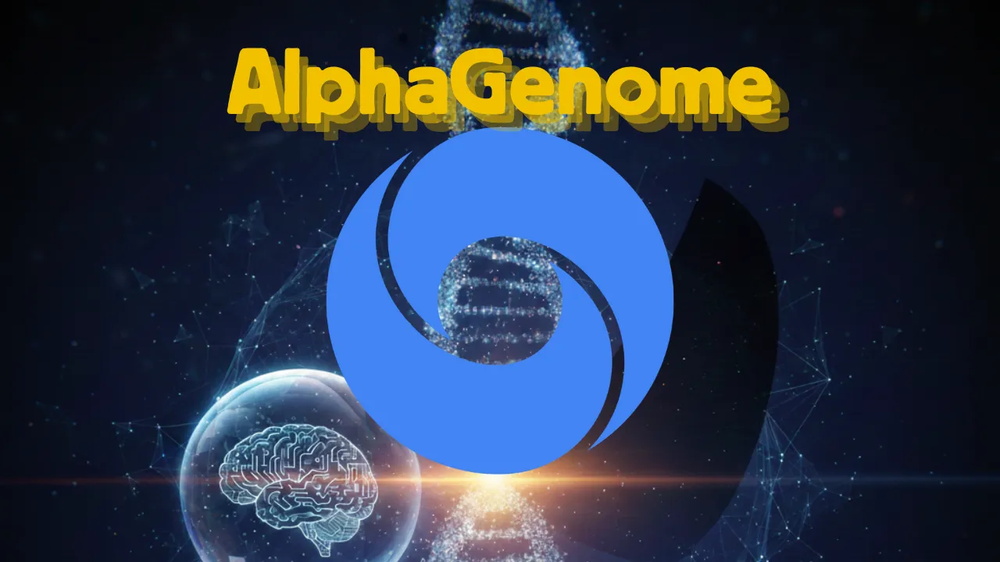
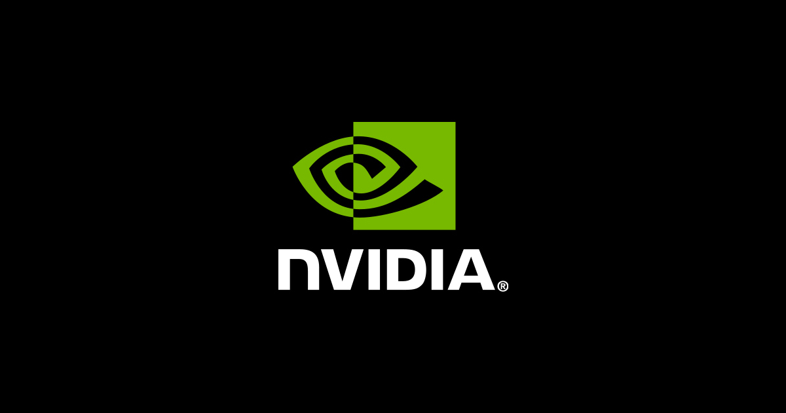
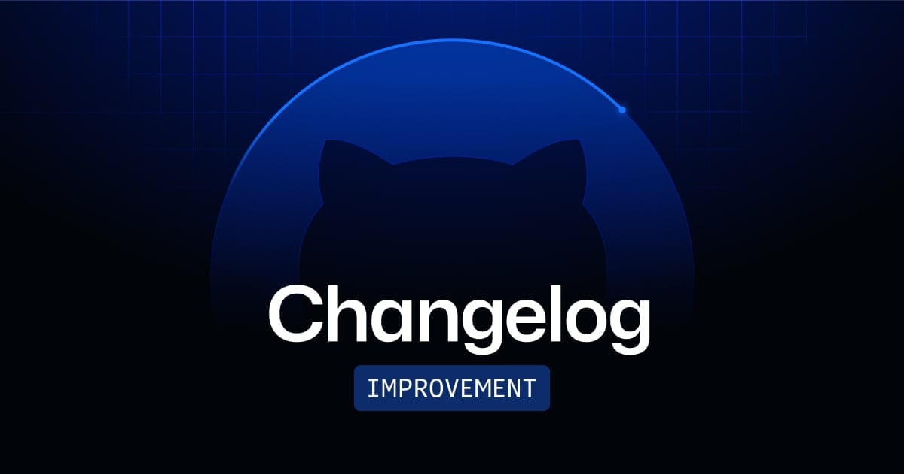
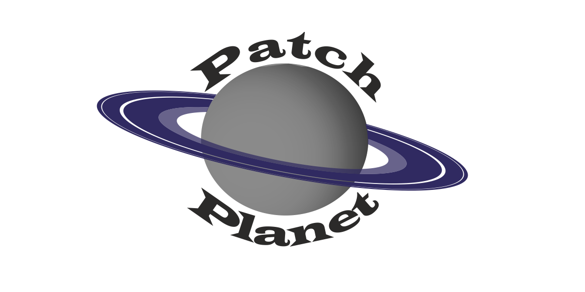
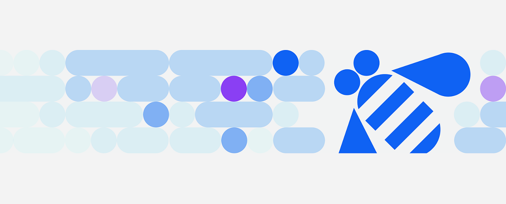
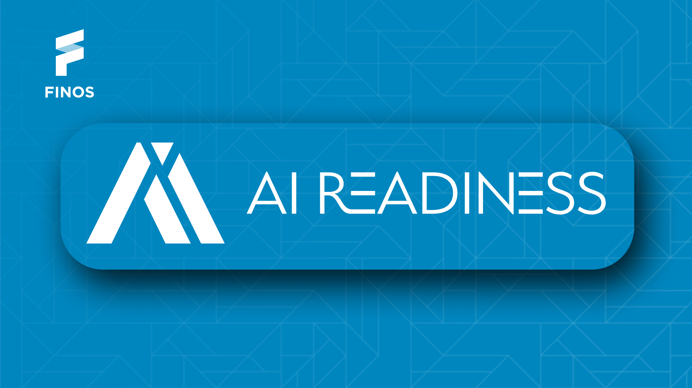
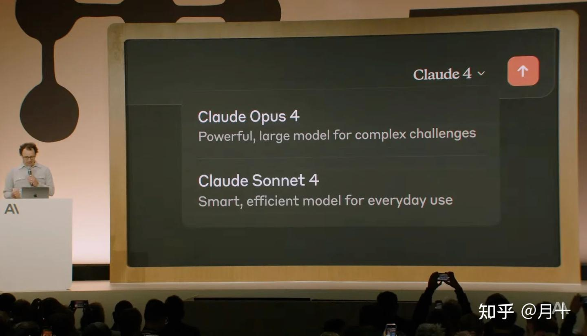

Janet 快车箱
AI Daily Briefing
2026-06-24
VOL 267
对中国创作者和中小企业来说，别再只问哪个模型更会写文案。未来几个月更重要的问题是：你的工作流能不能留痕、能不能控权限、能不能在模型降价前撑住成本。谁能把 AI 变成可审计的生产工具，谁才有资格谈规模化。
接下来 2-4 周盯三条线：OpenAI cyber 模型会不会开放更具体的企业能力，Groq 这类推理基础设施融资会不会带动新一轮价格战，以及金融、开源、代码工具社区会不会把 agent 权限规则从倡议变成默认配置。
Axios 报道，OpenAI 正在推出更强的网络安全模型 Daybreak，用于漏洞发现、防御测试和安全团队辅助分析。OpenAI 把重点放在防御侧，但外界最关心的是这种能力一旦扩散，攻防门槛会被压到多低。

The Daily Star 报道，AI 推理芯片公司 Groq 已完成 6.5 亿美元融资；报道同时提到，Groq 此前在 2025 年 9 月融资后估值达到 69 亿美元。Groq 用自研 LPU 抢低延迟推理市场，直接对准 AI 应用上线后的高频调用账单。

Yahoo Finance 汇总华尔街观点称，Google 正面临 AI 人才流失压力，Meta 等公司用高薪和大额股票挖人。报道提到，投资者已经开始把核心研究员流动当成 AI 竞争风险，普通 HR 新闻正在变成估值变量。

FINOS AI Readiness SIG 面向金融服务行业推动开源 AI 治理、风险、合规和实施实践，并通过行业协作把 responsible AI adoption 做成可复用框架。它要解决的是金融机构用 AI 时缺少共同技术和流程底座的问题。

澳大利亚金融评论报道，Five Eyes 情报圈认为 AI 驱动的网络能力可能在几个月内追平顶尖黑客团队。警告的核心是自动化攻击、漏洞利用和钓鱼内容生成正在合流，防守方不能再把 AI 风险当成远期变量。

OpenAI 这轮 cyber 模型升级的关键点，是把大模型能力包装成安全团队可用的防御工具：辅助发现漏洞、分析代码、压缩响应时间。它代表垂直能力从实验室进入高风险工位。

Google DeepMind 发布 AlphaGenome 预览，把长序列基因组理解和变异影响预测放进统一模型。DeepMind 称它可以帮助研究人员分析 DNA 变化如何影响基因调控，是 AI for science 继续向生物基础设施下沉的一步。

NVIDIA 发布面向机器人学习的 Omniverse Blueprint，把仿真、合成数据和机器人训练流程串成参考架构。它服务的是物理 AI 在上机前需要的虚拟训练和验证流程。

GitHub Changelog 显示，Copilot 在 JetBrains IDEs 中新增 Claude 作为 agent provider preview，并改进模型选择器、上下文窗口选择和最近使用模型。代码助手的竞争正在从单一模型能力，转向 IDE 入口和模型路由体验。

NVIDIA 宣布面向机器人开发的 Omniverse Blueprint，把仿真、合成数据、世界模型和机器人策略训练串成参考工作流。它给机器人公司提供从虚拟测试到现实部署的工程管线。

Patch the Planet 项目在 6 月 23 日发布更新，展示 AI agent 如何参与开源软件漏洞发现和补丁生成。它把大模型放进真实软件维护场景，直接避开只刷 benchmark 的空转。
Coalition 发布 2026 Cyber Threat Index，专门讨论 AI 如何改变钓鱼、漏洞利用和企业防御成本。网络保险公司开始把 AI 风险量化到保费和理赔模型里，这比抽象安全报告更接近企业真实账单。

IBM 发布 watsonx 相关企业 AI 治理更新，继续把模型管理、风险控制和审计能力打包进企业平台。大厂路线越来越明确：卖给企业的是能过安全和合规检查的 AI 管理层。
Groq 完成 6.5 亿美元融资，报道提到它此前估值已到 69 亿美元量级，资本押注的是大模型应用规模化后的推理吞吐和低延迟需求。训练芯片已经有 NVIDIA 巨墙，推理芯片公司只能从成本、速度和开发者体验里找缝。

Yahoo Finance 报道指出，华尔街担心 Google 在 AI 竞赛中流失关键人才，尤其是面对 Meta 等对手高额薪酬挖角。资本市场正在把人才稳定性视为 Alphabet AI 战略能否兑现的前置信号。

FINOS AI Readiness SIG 面向金融服务行业组织资源，推动开源 AI 治理与实施规范。对资本来说，这类项目短期不像模型发布那么性感，但它可能决定银行、券商和保险公司采用 AI 的默认技术栈。

Zyte 发布工具说明，展示如何在 Claude Code 之外接入任意模型，让开发者在不同供应商之间切换模型能力。它解决的是 coding agent 模型依赖过重的问题，减少被单一入口锁死。